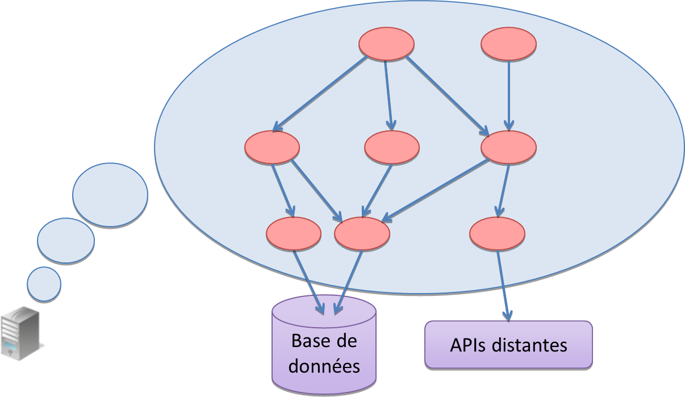
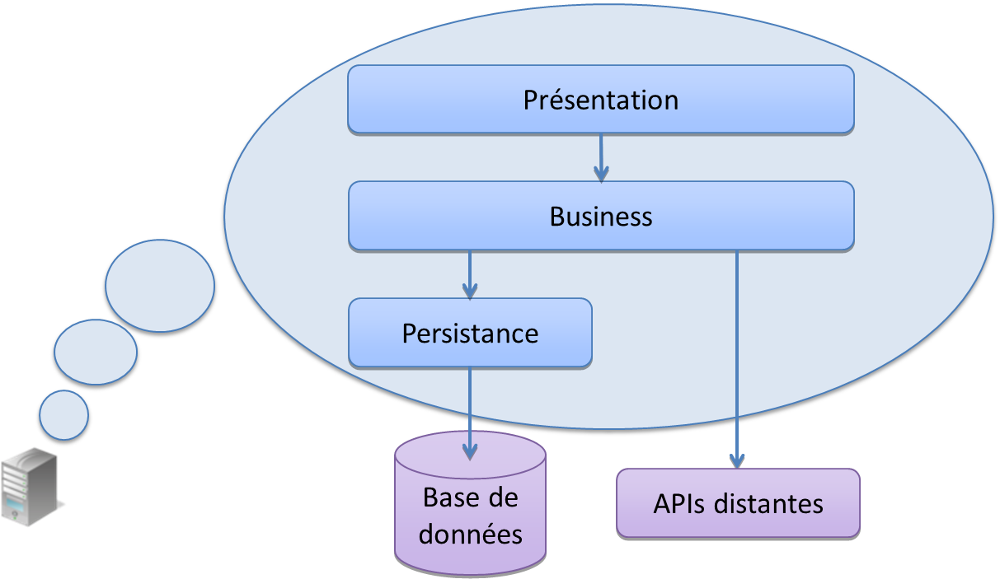
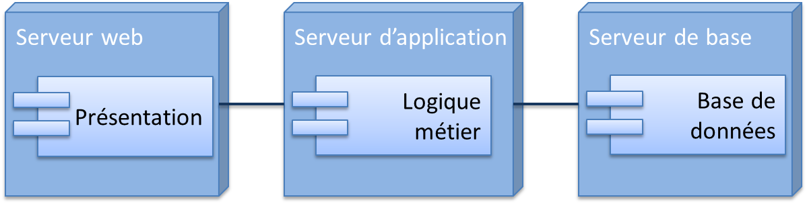
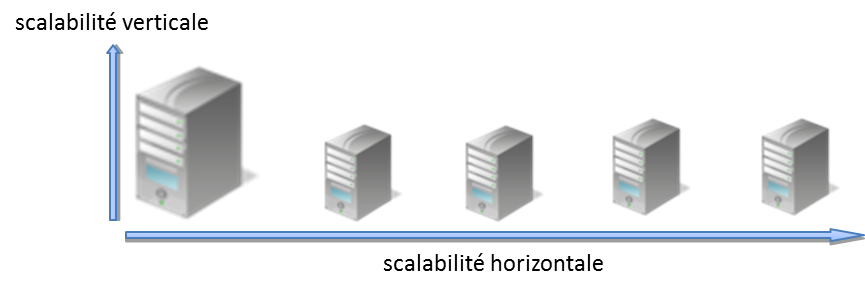
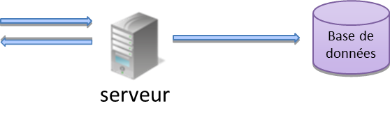
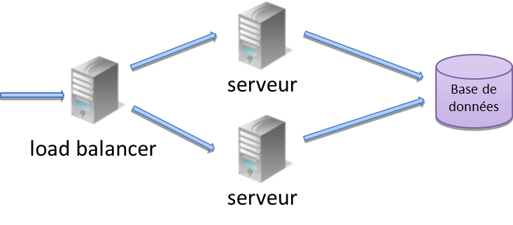
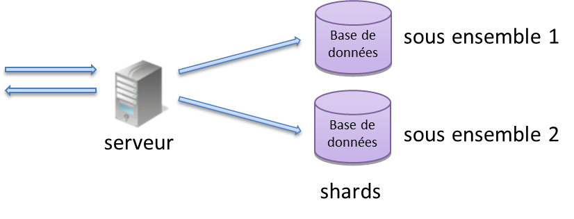
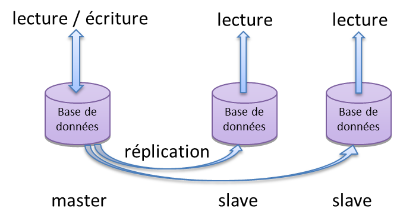
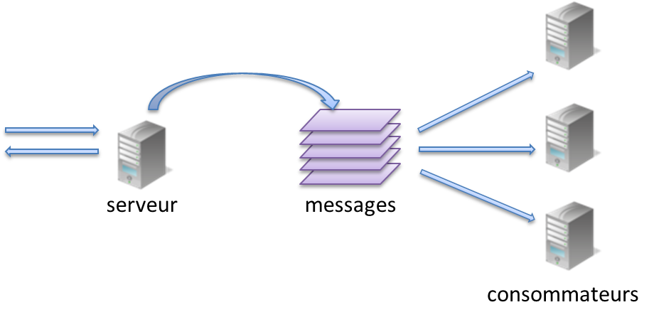

Architecture des serveurs
Les objets au sein d'un serveur forment un graphe d'objets qui collaborent afin de traiter les requêtes.
Chaque requête traverse donc un ou plusieurs de ces objets qui collaborent afin de générer une réponse.
Ces objets structurants du serveur sont appelés composants.
Les composants sont souvent regroupés en ensembles logiques formant des couches.
Le nom et le nombre des couches peut varier en fonction du besoin et des technologies, mais la forme canonique en comporte 3 :
http://geekandpoke.typepad.com/geekandpoke/
Il est même possible de packager et déployer chaque couche indépendamment.
on parle alors davantage de tiers plutôt que de couches.
La répartition canonique présentation / métier / données est appelé architecture 3 tiers.
Cette répartition autorise même de déployer chaque tiers dans un environnement différent.
Cette flexibilité vient avec un coût supplémentaire lors de la conception et de l'exploitation.
Hence, we get to my First Law of Distributed Object Design:
Don’t distribute your objects!
Martin Fowler
La topologie de réseau est l'organisation des serveurs qui constitue l'architecture.
Le but d'une bonne topologie est la tenue en charge et la faible consommation de ressources.
La scalabilité horizontale est la capacité de rajouter des serveurs.
La scalabilité verticale est l'ajout de ressources sur les serveurs existants. Cette solution atteint rapidement ses limites.
Il n'y a pas de solution unique à la tenue en charge : des sites comme twitter ou facebook ont du inventer leur propres techniques.
Nous allons voir quelques exemples et techniques afin d'augmenter la tenue en charge.
C'est la forme de base avec 2 tiers : un serveur et une base de données.
C'est généralement le point de départ pour un service avec un petit volume d'opérations.
| pour | contre |
|
|
Le load balancing permet de répartir la charge entre les noeuds d'un cluster sans que le client en ait conscience.
La haute disponibilité est la qualité d'un cluster à continuer de répondre correctement en cas de panne d'une partie des serveurs.
| pour | contre |
|
|
Le sharding de base est une segmentation horizontale des données.
Chaque shard acceuille le même modèle de données mais un segment différent.
Un exemple de segmentation : les identifiants pairs et impairs.
| pour | contre |
|
|
http://en.wikipedia.org/wiki/Shard_(database_architecture)
Dans ce mode, seul une base est utilisée pour l'écriture.
Les bases esclaves sont mise à jour en continu par réplication des modifications qui surviennent sur le maitre.
| pour | contre |
|
|
Le serveur envoie des messages et est capable de répondre rapidement.
| pour | contre |
|
|